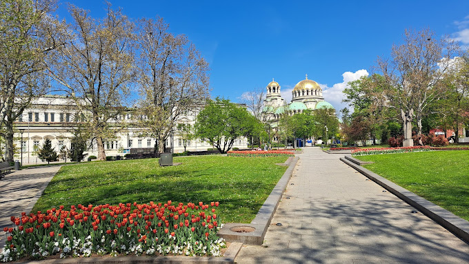

Sofia is the capital of the Bulgaria.Sofia is Bulgaria’s capital and largest city. Situated in the very heart of the Balkan peninsula, it is one of Europe’s oldest cities. While still undiscovered by many, more and more people are now falling in love with the city’s unique east meets west vibe..
Sofia is a city on the ......
Black Sea.
You can reach Sofia airport from all over Europe.Other Restaurants Of course, there are countless other options if you’ve already had enough of the Bulgarian cuisine: Aubergine – pairing local craft beers with its meals Aubergine’s talented chefs use their imagination in order to create astonishing dishes. They draw inspiration from the local traditions, as well as international gastronomy. Accommodated in an old house on a quiet street close to the National Palace of Culture this restaurant offers a cozy and warm atmosphere. It also has a peaceful garden. Tenebris – a unique experience for the adventure-seeking foodies. Imagine letting go of the visual and immersing yourself in a completely different world. One full of taste, texture, sound, and real human interaction. You will spend a few hours with your friends in pitch-black darkness, trying to guess what you are actually eating. A visually impaired host will be your guide on this culinary journey while giving you interesting insights. Ninja Bowl Sofia – if you are looking for international flavors, Asian fusion cuisine, poke bowls, Thai curry, and so much more – look no further. Sweet & Salty Bakery Cafe – there’s hardly a better place for brunch and breakfast in town Learn more about traditional Bulgarian food and must-try dishes in our Guide to Bulgarian Cuisine